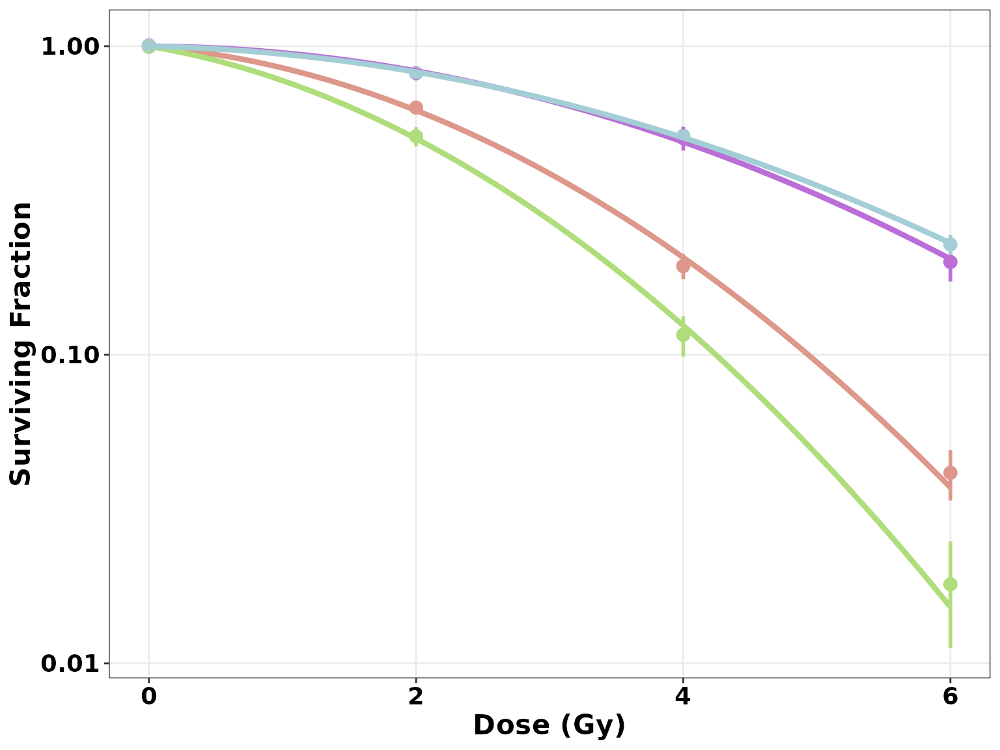

CellSurvAssay
Clonogenic Survival Analysis in R made easy!
Arunangshu Sarkar
2022-05-25
Source: vignettes/CellSurvAssay.Rmd
CellSurvAssay.RmdCellSurvAssay
CellSurvAssay consists of a couple of tools that can be used to perform Clonogenic Survival Analysis in R very easily and efficiently. These two tools are:
CellSurvAssay R package: This helps even beginner R users to perform the analysis in R, while maintaining the flexibility of a package.
CellSurvAssay Shiny app: This is a web application that helps users with no experience in R to perform the analysis, in R. The app is based on the CellSurvAssay R package and can be accessed here.
This document is the vignette that accompanies with the R package, and describes comprehensively how the package works and how it can be used to perform the analysis. For details on the Shiny app, please access it and refer to its Help pages. For more details on both of these tools and methodologies, please refer to (cite our paper).
Purpose of the CellSurvAssay R package
- This R package has been written around CFAssay, another R package that can be used to perform Cell Survival Assay analysis in R. However, CellSurvAssay has it’s own purposes and advantages:
- it makes performing Clonogenic Survival Analysis in R incredibly user-friendly and efficient, even for beginner R users who don’t have the luxury of time to dig deeper into R,
- it arranges all the commonly used steps of clonogenic assay analysis in one location and automates the data wrangling steps to the extent that only single lines of code suffice for each step of the analysis,
- it utilizes
ggplot()to plot the cell survival curves, and builds better quality figures than other available R packages, - it is less time consuming and more convenient for the user, as it accepts the raw data for the analysis and calculates the plating efficiencies by itself, unlike many automated software commonly used,
- it offers various method options for parameter estimation and calculating plating efficiencies, unlike most other available software tools, and
- as R is being utilized, the methodology stays open and the results reproducible.
Installing the package
- The package is being shared through Bioconductor and GitHub. Running the following set of codes installs and loads the package in R memory:
# if installing from Bioconductor
# install BiocManager, if required
if (!require("BiocManager", quietly = TRUE))
install.packages("BiocManager")
# install CellSurvAssay
BiocManager::install("CellSurvAssay")
# load CellSurvAssay in R
library(CellSurvAssay)
# if installing from GitHub
# install devtools, if required
if(!require(devtools)) {
install.packages("devtools")
library(devtools)
}
# install CellSurvAssay
install_github("pickeringlab/CellSurvAssay",
build_vignettes = TRUE,
dependencies = TRUE)
# load CellSurvAssay in R memory
library(CellSurvAssay) - This vignette can be accessed from R using the following command:
browseVignettes("CellSurvAssay")Importing the data set
- The function
importData()helps import the data set. Its a simple helper function aimed for aiding beginner R users, and other importing functions can be used as well instead of this. - The advantages of using this function instead of other importing functions are:
- beginner R users don’t need to search for functions in other R packages just to import their data,
- one function supports importing multiple file types, including csv, tsv, xlsx, and delimited text files, and
- if the minimum requirements, as explained below, are not matched by the imported dataset, it gives an error message, which helps to rectify it before proceeding with the downstream analysis.
- It is important to note here that to successfully run the package, at least the following columns, with these exact names, should be present in your data set. Presence of additional columns or the sequence of these columns have no affect on the analysis.
- “cline” - cell lines: distinguishes the curves in the data frame
- “Exp” - replicates: discriminates replicates within each curve
- “dose” - applied radiation dose
- “ncells” - no. of cells seeded
- “ncolonies” - no. of counted colonies
- If the column names of the imported data do not match with the requirements, it gives an error message.
- Below is the syntax to use this function. Here, we assign the name
datatabto the data, but any other name can be used as well. - Within the parentheses of the function, enter the path of the file and then the type of file, both within quotes:
datatab <- importData("path/to/file", "type of file")- If it is a .xlsx file, there is no need to enter the type of file. For other file types, entering
filetypeis a requirement, as shown below:
datatab <- importData("path/to/file.xlsx") #for an excel file
datatab <- importData("path/to/file.csv", filetype = "csv") #for a csv file
datatab <- importData("path/to/file.tsv", filetype = "tsv") #for a tsv file- If the file is a delimited text file, the following format can be followed:
#for a '|' delimited file
datatab <- importData("path/to/file", filetype = "txt", separator = "|")
#for a tab delimited file
datatab <- importData("path/to/file", filetype = "txt", separator = "\t") - The package contains a data set that can be used to get familiar with the package. It can be imported in the R environment as below:
datatab <- CASP8_dataAdditional arguments
Additional arguments can be used with
importData()as well, just like the read_csv, read_tsv & read_delim functions of the readr package, or the read_excel function of the readxl package.Below are a couple of examples of additional arguments that can be used to import a data set using
importData():
#to skip the first couple of rows
datatab <- importData("path/to/file.xlsx", skip = 2)
#to tell R that missing values are denoted by "-" in the data being imported
datatab <- importData("path/to/file.xlsx", na = "-") - Please note that if a name different from
datatabis chosen for the imported data set, that name must be used in the downstream analysis. - When the data is imported successfully, it should appear in the “Global Environment” of RStudio (top-right box). To view it, use the following command:
View(datatab)Fitting the Linear Quadratic Model
The linear-quadratic model depicts the effect of radiation or other insulting agent on cell survival. It’s given by: \[ S = S(D)/S(0) = e^{- \alpha D - \beta D^2} \]
Here, cell survival S is a function of dose D of the insulting agent to which the cells are exposed. S(0) is the plating efficiency, the surviving fraction of untreated or unirradiated cells, and S(D) is that of treated cells. \(\alpha\) and \(\beta\) are parameters that describe the cell’s radiosensitivity.
Typically, S(0) is considered fixed and kept on the left side of the equation. However, CFAssay treats colonies from untreated cells as random observations, similar to colonies from treated cells, and keeps S(0) on the right side of the equation. Moreover, CFAssay formulates the equation differently and reverses the signs, resulting in the following equation: \[ S = S(D) = e^{c + \alpha D + \beta D^2} \]
\(c=\log {S(0)}\) is the intercept here and varies between different experiments.
CellSurvAssay fits the linear quadratic model similar to CFAssay. The
lqmodelFit()function helps fit the linear quadratic model for any cell type present in the imported data.Within the parentheses, first enter the name of the data set given by you, and then, within quotes, the cell type for which the model is to be fit.
lqmodelFit(datatab, "shCASP8-N")
## ****** Cell type: shCASP8-N ******
##
## *** Coefficients of LQ-model for cell survival ***
## method = ml
## PEmethod = fit
##
## Logarithmic plating efficiencies PE fitted as intercepts
## see remark in the manual, 1.2
## Estimate Std. Error t value Pr(>|t|)
## PE1 -1.238340 0.05429647 -22.80702 7.892816e-08
## PE2 -1.205679 0.05371585 -22.44550 8.815030e-08
## PE3 -1.297141 0.05537422 -23.42499 6.559791e-08
##
## Shape parameters alpha and beta
## Estimate Std. Error t value Pr(>|t|)
## alpha -0.01613085 0.038556758 -0.4183664 0.688215852
## beta -0.03678049 0.007020955 -5.2386733 0.001200996
##
## Observed and fitted plating efficiencies (%):
## Experiment PE PEfitted
## PE1 1 29.6 29.0
## PE2 2 31.0 29.9
## PE3 3 26.7 27.3
##
## Residual Deviance: 9.996061
## Total residual sum of weighted squares rsswTot: 10.28712
## Residual Degrees of Freedom: 7
## Dispersion parameter: 1.469589
##
## Fraction rssw of rsswTot per Experiment
## Experiment rssw perCent
## 1 1 1.47 14.3
## 2 2 1.08 10.5
## 3 3 7.74 75.3
##
## *** Analysis by CellSurvAssay v0.99.0 ***- The output tells us the \(\alpha\) and \(\beta\) values among other statistics.
- It’s important to note here that due to the positive formulation of the model, the parameters \(c\), \(\alpha\) and \(\beta\) generated by R will have negative values. So, from the above results, the \(\alpha\) and \(\beta\) for shCASP8-N are 0.0161308 and 0.03678049 respectively.
Other method options
- CellSurvAssay, like CFAssay, uses the maximum likelihood (ML) method as default for calculating the parameters instead of the commonly applied least-squares (LS) method because the LS method necessitates the data to be normally distributed, while colony numbers being discrete values follow a Poisson distribution, making the ML method preferable statistically. However, the options for using the standard LS method
(method = “ls”)and a weighted LS method described by Franken et al.(method = “franken”)are also present for comparison. - The default model fitting method can be changed as follows:
lqmodelFit(datatab, "shCASP8-N", method = "ls") #least squares method
lqmodelFit(datatab, "shCASP8-N", method = "franken") #franken method- Though the method of treating the data from untreated cells as random observations is statistically preferable and kept as default in the package
(PEmethod = “fit”), the option for implementing the conventional normalization method(PEmethod = “fix”)is present as well for evaluation. - To change the default plating efficiency method, follow the syntax below:
lqmodelFit(datatab, "shCASP8-N", PEmethod = "fix")Plotting Cell Survival curves
- The cell survival curves can be plotted using two different functions:
plotCSCurve()andggplotCSCurve(). - While the former gives the standard curves provided by the CFAssay package, the latter is preferred as it uses the widely popular
ggplot()function of R to plot the curves, allowing all the customizations and better graphics. It also allows to easily download the figures plotted in the users’ own specifications. Both the functions are described below.
Plotting using plotCSCurve()
Individual curves
- The function
plotCSCurve()helps plot both individual and multiple curves. Below is the simplest way to plot a curve of a single cell type. - Within the parentheses, first enter the name of the data set and then, within quotes, the cell type for which you want the curve.
plotCSCurve(datatab, "control-B")Multiple curves
- The same function
plotCSCurve()will help you plot multiple curves. Instead of entering a single cell type, just enter all the cell types for which the curves are required.
plotCSCurve(datatab, "shCASP8-NT", "shCASP8-B", "shCASP8-B+Z", "shCASP8-B+Z+N")Customizing the plots
- This function allows a few customizations by adding further arguments within the parentheses as follows:
-
col = "name_of_color"for a single curve andcol = c("name_of_color_1", "name_of_color_2",...)for multiple curves. The names of colors accepted in R can be found here or here. Choose your favorite ones! -
xlimandylimcan be used to changed the default limits of x and y axes respectively. E.g.ylim = c(0.1, 1)will change the start of y-axis to 0.1 and the end to 1. -
xlabandylabcan be used to change the default labels of x and y axes respectively. E.g.xlab = "X axis"will change the default label of x-axis to “X axis”. -
title = "Title of the plot"will give a title to the plot. -
pch = shape_numberorpch = "shape_charactercan change the shape of the points in the curve. You can either enter an integer, or a character within quotes, as mentioned here in the section “pch symbols list”.
-
- Here is a plot with all of the customization:
plotCSCurve(datatab, "shCASP8-NT", "shCASP8-B", "shCASP8-B+Z", "shCASP8-B+Z+N",
col = c("red", "blue", "darkgreen", "steelblue"), pch = 4, ylim = c(0.01, 1),
xlab = "X-axis", ylab = "Y-axis", title = "Cell Survival Curves")Other options
- The default model fitting and plating efficiency methods can be changed for all these plots as well, as described in the “Fitting the linear quadratic model” section:
plotCSCurve(datatab, "control-B", method = "franken", PEmethod = "fix")Plotting using ggplotCSCurve()
- This is the recommended function for plotting the cell survival curves. Instead of the regular curves shown above, the
ggplotCSCurve()function plots them usingggplot(). - For plotting the default
ggplotCSCurve()plots, the arguments are exactly similar to theplotCSCurve()function, for both single and multiple curves.
Multiple curves
ggplotCSCurve(datatab, "shCASP8-NT", "shCASP8-B", "shCASP8-B+Z", "shCASP8-B+Z+N")Customizing the plots
- The customization allowed by this function are more comprehensive in range:
-
colorsargument lets you change the default colors of the curves. It must be passed similarly as thecolargument ofplotCSCurve():colors = "name_of_color"for a single curve andcolors = c("name_of_color_1", "name_of_color_2",...)for multiple curves. The names of colors accepted in R can be found here or here. Choose your favorite ones! Note: The number of colors chosen should be equal to or more than the number of cell types passed as arguments. If no colors are chosen by the user, the function chooses them by random and they might change with each plotting. Also, the sequence in which the colors are entered is matched with the sequence of the cell types. So, the first color entered is assigned to the first cell type, and so on. -
titlegives a title to the plot. Default is"". E.g.title = "Cell Survival Curves"provides a title to the plot “Cell Survival Curves”. -
title_sizeaccepts an integer and changes the font size of the title. E.g.title_size = 12. -
title_colorchanges the font color of the title. E.g.title_color = "red". -
title_facechanges the font face of the title. Accepted arguments are"plain"/"bold"/"italic"/"bold.italic". Default is"plain". E.g.title_face = "bold.italic". -
title_alignchanges the alignment/justification of the plot title. Accepts"left,"center", and"right". Default is"center". -
subtitle = "Subtitle"gives a subtitle to the plot. The font size, color, face, and alignment can be changed bysub_size,sub_color,sub_face, andsub_alignrespectively, similar to the title of the plot. -
xlabandylabcan be used to change the default labels of x and y axes respectively. E.g.xlab = "X axis"will change the default label of x-axis to “X axis”. The default label for X-axis is"Dose(Gy), and that for the Y-axis is"Survivng Fraction". The font size, color, and face of the x-axis label can be changed byxlab_size,xlab_color, andxlab_facerespectively, and that of the y-axis label can be changed byylab_size,ylab_color, andylab_facerespectively, similar to the title of the plot. The default values for these, both for the X and Y axes, are16,"black", and"bold". -
legend_poscan be used to control the position of the legend. Default is"inside", which puts the legend in the bottom left of the figure. If"outside', then puts it outside on the right of the figure, and if"none", then removes it. -
legend_titleadds a title for the legend; default is"". E.g.legend_title = "Cell types"changes the legend title to “Cell types”. The font size, color, face, and alignment of the legend title can be changed byltitle_size,ltitle_color,ltitle_face, andltitle_alignrespectively, similar to the plot title. The default values for these are20,"black","bold", and"left"respectively. -
ltext_size,ltext_color, andltext_facechange the font size, color, and face of the texts in the legend respectively. The default values are18,"black", and"bold". -
xtext_size,xtext_color, andxtext_facechange the font size, color, and face of the x-axis tick labels respectively. The default values are14,"black", and"bold". -
ytext_size,ytext_color, andytext_facechange the font size, color, and face of the y-axis tick labels respectively. The default values are14,"black", and"bold". -
point_shapeaccepts an integer or character similarly aspchinplotCSCurve()to change the shape of the points in the plot. You can either enter an integer, or a character within quotes, as mentioned here in the section “pch symbols list”. Default is16. -
point_sizeaccepts an integer and determines the size of the points in the plot. Default is3.5. -
curve_typeandsegment_typeaccept integers, or characters within quotes, and determine the types of line used to plot the curve and the vertical line segment respectively. The type of lines accepted by R can be found here, under the section “Line types”. The default values of both are1. -
curve_widthandsegment_widthaccept numbers and determine the widths of the curve and the vertical line segment respectively. The default values are1.5and1respectively. -
themewill determine the theme of the plot. The theme should be entered in the following manner:theme = package::theme_name(). A good list of themes can be found here. The default value isggplot2::theme_bw(). -
ybreaksaccept a vector of numbers denoting the breaks in y-axis:ybreaks = c(break1, break2, ...). These list of breaks or ticks will appear on the plot. The default values are chosen automatically byggplot(). Plots with sameybreaksandylimare easier to compare. -
ylimcan be used to changed the default limits of x and y axes respectively. E.g.ylim = c(0.1, 1)will change the start of y-axis to 0.1 and the end to 1. The default values are chosen automatically byggplot(). Plots with sameybreaksandylimare easier to compare. -
save = "yes"saves the plot in the specified path, format, and size. Default is"no". -
save_pathcan be used to specify the path where the plot is to be saved. E.g.save_path = "C:/User1/Desktop". If nothing is specified, the plot is saved in the current working directory obtained bygetwd(). -
save_filenamecan be used to specify the desired file name and extension of the plot to be saved. Accepts most common extensions, including".pdf",".jpeg", and".png". Default is"myplot.pdf. -
plot_heightandplot_widthis used to specify the size of the plot to be saved.unitsallows to specify the unit of the measurements, and accepts"in","cm","mm", or"px". The default for the height is4, width is5, and units is"in".
-
- Many of these customizations are used below to customize the figure above:
ggplotCSCurve(datatab, "shCASP8-NT", "shCASP8-B", "shCASP8-B+Z", "shCASP8-B+Z+N",
colors = c("red", "blue", "darkgreen", "steelblue"),
title = "Cell Survival Curves", title_size = 20, title_color = "darkgreen",
title_align = "left", subtitle = "CellSurvAssay", sub_color = "steelblue",
sub_align = "left", xlab = "X-axis", xlab_color = "red", xlab_size = 14,
xlab_face = "bold.italic", ylab = "Y-axis", ylab_color = "red", ylab_size = 14,
ylab_face = "bold.italic",
xtext_color = "purple", ytext_color = "purple",
legend_title = "Cell types", ltitle_size = 15, legend_back = "gray",
legend_border = "black", legend_border_width = 0.5, ltitle_align = "center",
point_shape = 15, point_size = 1, segment_width = 1, segment_type = 1,
curve_width = 1.1, curve_type = 1,
theme = ggplot2::theme_test())- Here is an example explaining the syntax to save a plot:
ggplotCSCurve(datatab, "shCASP8-NT", "shCASP8-B", "shCASP8-B+Z", "shCASP8-B+Z+N",
save = "Yes", plot_height = 4, plot_width = 5, units = "in",
save_path = "C:/User1/desktop", save_filename = "Plot.pdf")Another way of customizing the ggplotCSCurve() plots
- The layered grammar of graphics of
ggplot()allows users to add any number of layers to aggplotobject. This property can be used as an advantage to add customization to aggplotCSCurve()plot. - For example, though we can use
legend_pos = "none"to remove the legend, we can do the same in the following manner:
library(ggplot2)
ggplotCSCurve(datatab, "shCASP8-NT", "shCASP8-B", "shCASP8-B+Z", "shCASP8-B+Z+N") +
theme(legend.position = "none")
- This option is helpful when you want to add any customization which is not accepted by
ggplotCSCurve(). - Please note that these layers can only be added in the format acceptable by
ggplot(), and theggplot2package should be loaded in memory usinglibrary(ggplot2)as above.
Comparing two curves
- The
compareCurves()function helps us statistically compare two curves. It prints the ANOVA results. - The null hypothesis is that the parameters \(\alpha\) and \(\beta\) of both the models are independent of the two curves, while the alternate hypothesis is that the parameters are different.
- Within parenthesis, enter the name of the data set, and then enter the names of the two cell types that are being compared:
compareCurves(datatab, "shCASP8-N", "shCASP8-B+Z+N")
## ****** Cell type 1: shCASP8-N || Cell type 2: shCASP8-B+Z+N ******
##
## Overall comparison test for coefficients alpha and beta of LQ-models
## ====================================================================
## method = ml
## PEmethod = fit
##
## 6 PEs fitted as intercepts. To look at, use simple R print function.
## Null hypothesis (Model 1): one set of shape parameters alpha and beta for all data
## ----------------------------------------------------------------------------------
## Estimate Std. Error t value Pr(>|t|)
## alpha -0.01910478 0.020810067 -0.9180547 3.722228e-01
## beta -0.03692732 0.003798381 -9.7218568 4.061270e-08
##
## Goodness-of-fit values
## Residual Deviance: 12.85619
## Total sum of squared weighted residuals rsswTot: 13.19573
## Residual Degrees of Freedom: 16
## Dispersion parameter: 0.8247333
##
## Alternative hypothesis (Model 2): two sets of shape parameters alpha and beta
## -----------------------------------------------------------------------------
## Estimate Std. Error t value Pr(>|t|)
## alpha:curvesshCASP8-B+Z+N -0.02224331 0.031717703 -0.7012901 4.946148e-01
## alpha:curvesshCASP8-N -0.01613085 0.030528750 -0.5283823 6.055094e-01
## beta:curvesshCASP8-B+Z+N -0.03710309 0.005804313 -6.3923312 1.675728e-05
## beta:curvesshCASP8-N -0.03678049 0.005559103 -6.6162636 1.158171e-05
##
## Goodness-of-fit values
## Residual Deviance: 12.60644
## Total sum of squared weighted residuals rsswTot: 12.89855
## Residual Degrees of Freedom: 14
## Dispersion parameter: 0.9213253
##
## Analysis of Variance Table and F-test
## Model 2 versus Model 1
## Resid. Df Resid. Dev Df Deviance F Pr(>F)
## 1 16 12.856
## 2 14 12.606 2 0.24975 0.1355 0.8744
##
## *** Analysis by CellSurvAssay v0.99.0 ***Calculating Dose Enhancement Ratio
- The clonogenic assay can also determine cell survival fractions in combination treatments, but the additional treatment might influence the proliferation rate and modify the radiation dose-survival curve.
- Hence, in such situations, we must calculate the Dose Enhancement Ratio (DER), also known as Sensitizer Enhancement Ratio, Dose Modifying Factor, Dose Modifying Ratio, or Radiosenstitivity Enhancement Factor, as a parameter to quantify the differences between survival curves.
- The function
calculateDER()calculates the Dose Enhancement Ratio. - Within the parenthesis, enter the name of the data set followed by the “control” cell type (which will be in the numerator of the ratio), then the “treatment” cell type (which will be in the denominator of the ratio), and finally the survival fraction for which the DER is to be calculated.
calculateDER(datatab, "shCASP8-NT", "shCASP8-N", 0.25)
## *** Dose Enhancement Ratio ***
##
## control = shCASP8-NT
## treatment = shCASP8-N
## survival fraction = 0.25
## method = ml
## PEmethod = fit
## DER = 0.945622065301553
##
## *** Analysis by CellSurvAssay v0.99.0 ***- Here, the DER of shCASP8-NT : shCASP8-N is 0.9456221.
Session Information
sessionInfo()
## R version 4.2.0 (2022-04-22)
## Platform: x86_64-pc-linux-gnu (64-bit)
## Running under: Ubuntu 20.04.4 LTS
##
## Matrix products: default
## BLAS: /usr/lib/x86_64-linux-gnu/blas/libblas.so.3.9.0
## LAPACK: /usr/lib/x86_64-linux-gnu/lapack/liblapack.so.3.9.0
##
## locale:
## [1] LC_CTYPE=C.UTF-8 LC_NUMERIC=C LC_TIME=C.UTF-8
## [4] LC_COLLATE=C.UTF-8 LC_MONETARY=C.UTF-8 LC_MESSAGES=C.UTF-8
## [7] LC_PAPER=C.UTF-8 LC_NAME=C LC_ADDRESS=C
## [10] LC_TELEPHONE=C LC_MEASUREMENT=C.UTF-8 LC_IDENTIFICATION=C
##
## attached base packages:
## [1] stats graphics grDevices utils datasets methods base
##
## other attached packages:
## [1] ggplot2_3.3.6 CellSurvAssay_0.99.0
##
## loaded via a namespace (and not attached):
## [1] tidyselect_1.1.2 xfun_0.31 bslib_0.3.1
## [4] purrr_0.3.4 V8_4.2.0 colorspace_2.0-3
## [7] vctrs_0.4.1 generics_0.1.2 CFAssay_1.30.0
## [10] htmltools_0.5.2 yaml_2.3.5 utf8_1.2.2
## [13] rlang_1.0.2 pkgdown_2.0.3 jquerylib_0.1.4
## [16] pillar_1.7.0 glue_1.6.2 withr_2.5.0
## [19] randomcoloR_1.1.0.1 lifecycle_1.0.1 stringr_1.4.0
## [22] munsell_0.5.0 gtable_0.3.0 ragg_1.2.2
## [25] memoise_2.0.1 evaluate_0.15 knitr_1.39
## [28] fastmap_1.1.0 curl_4.3.2 fansi_1.0.3
## [31] highr_0.9 Rcpp_1.0.8.3 scales_1.2.0
## [34] cachem_1.0.6 desc_1.4.1 jsonlite_1.8.0
## [37] farver_2.1.0 systemfonts_1.0.4 fs_1.5.2
## [40] textshaping_0.3.6 digest_0.6.29 stringi_1.7.6
## [43] Rtsne_0.16 dplyr_1.0.9 rprojroot_2.0.3
## [46] grid_4.2.0 cli_3.3.0 tools_4.2.0
## [49] magrittr_2.0.3 sass_0.4.1 tibble_3.1.7
## [52] cluster_2.1.3 crayon_1.5.1 pkgconfig_2.0.3
## [55] ellipsis_0.3.2 rmarkdown_2.14 R6_2.5.1
## [58] compiler_4.2.0